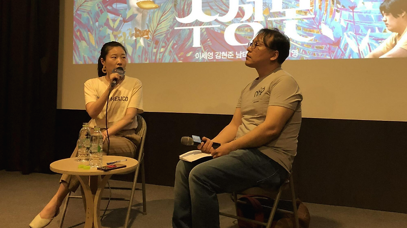

매거진 삼삼오오 · GV 모먼트
<수성못> 유지영 감독 / 2018.04.21


<수성못> 관객과의 대화 기록 2018.04.21
참석 유지영 감독
사회 이용주 평론가
기록 김보현 관객프로그래머
이용주 : 수성못, 재미있으셨나요? 영화 자체가 무거운 주제를 다룸에도 불구하고 경쾌한 리듬으로 너무 깊이 빠지지 않으면서도 우리에게 뭔가 생각할 여지를 남겨두고 영화가 끝나는 것 같습니다. 오늘 질문들이 많으실 것 같아서 감독님 소개부터 하고 감독님의 영화에 대한 이야기 잠깐 듣겠습니다.
유지영 : 안녕하세요. 수성못 연출한 유지영입니다. 멀티플랙스 관에도 걸려있는데 오오극장이 제일 관객 수가 많다고 들었습니다. 와주신 분들게 정말 너무 감사드리고, 대구에서 찍었기 때문에서 대구분들의 반응과 질문이 궁금합니다. 질문 많이 주시면 감사하겠습니다.
이용주 : 질문 생각하시는 동안 수성못을 기획한 부분에 대해서, 어떻게 제작하게 됐는지. 입이 닳도록 얘기했겠지만 짧게 부탁드립니다.
유지영 : 제가 대구 토박이고 글이 안 써지거나 마음이 혼란스러울 때 많이 산책을 했던 공간이수성못 이에요. 지금은 수성못이 2-30대분들이 보기에는 인공호수처럼 카페가 많이 들어서 있잖아요. 제가 어릴 때만 해도 포장마차가 쭉 늘어져있고 그 시절에 돼지껍데기를 아버지가 사주셨어요. 실족사한 사람들도 많았고 자살한 사람들에 대한 뉴스도 많아서 그래서 첫째로 수성못에서 영화를 만들어보고 싶다는 게 있었고. 둘째로 내 얘기를 하고 싶으면 내가 나고 자란 곳에 대한 이야기를 해야겠다는 마음도 있었습니다. 수성못은 일종의 대구의 은유인거죠. 거기서 너무 벗어나고 싶고 대구를 떠나서 편입하고 싶고 서울로 가고 싶고 더 많은 문화를 누리고 싶었고 가족들로부터 독립해서 벗어나 살아보고 싶고. 그게 다 실패해서 마치 수성못에 갇힌 오리처럼. 그런 은유에서부터 시작했던 것 같아요.
이용주 : 홍상수 감독님 같은 경우도 이런 질문이 있었어요. “왜 그렇게 술집 장면이 많으냐?”는 질문에 “내가 가장 잘 아는 장소다. 그래서 거기서 많이 찍는다”라는 답을 했었죠. 그런데 실제로 내가 잘 알고 있다고 생각했지만 영화에 들여 놓았을 때 내가 전혀 몰랐던 세계가 발견됐을 수도 있었겠다는 생각이 들어요. 자전적인 얘기도 포함됐겠지만 다시 수성못을 보면서 이야기를 조감하면서 새로운 부분도 많이 발견 됐을 거라고 생각합니다.
유지영 : 일종의 거리감에 대한 이야기인 것 같아요. 내가 지금 35살인데 20대 때는 몰랐어요. 대구에 있으니까 당연한 것으로 생각하고. 막상 서울로 학교를 다니고 서울에 살다보니 그때서야 대구를 조금 거리감을 두고 보게 된 것 같아요. 그때 이를테면 뉴스를 봐도 대구에서 일어난 사건 사고가 눈에 잘 들어오고. 그랬던 게 있었고 다시 제가 서울에서 공부를 하고 경제적 여건이 안돼서 대구로 울면서 내려와야 했을 때 대구에 있으면서 되게 혼란스러웠요. ‘내가 어떻게 해서 이룬 “인서울”인데 다시 대구에 와서 이러고 있나’ 겉으로 가족들이나 연인이 속상할까봐 이야기 못했지만 속상했던, 막막하던 시기가 있었어요. 그게 수성못 시나리오를 쓰게 된 계기가 되었고 그러면서 20대를 되돌아보고 이제는 내가 십여년이 지나서 그때와 거리감을 둘 수 있겠다는 생각이 들었던 것 같아요. 20대 때 너무나 열심히 했는데 실패를 많이 했던 것. 생각보다 몰랐는데 대구가 보수적인 지역인거에요. 실제 영화에 나온 대사가 제가 들었거나 했던 말 입니다.
Q : 남동생으로 나오는 분에 감정이입해서 봤는데요. 방에 틀어박혀서 책만 보고 있고 그러면 어머니가 와서 좀 나오라고 하신다. 실제 저도 그런 말을 많이 들었어요. 저 분의 이야기가 너무 궁금하다. 어떤 책을 보실까? 저 분의 이야기가 지나가다가 도를 아십니까 하는 분에게 낚시를 당하면서 끝나는데 나름 생각하신 뒷이야기가 있으신가요?
유지영 : 희준이 같은 경우는 시나리오를 쓰면서 애정하는 캐릭터였다. 왜냐면 20대를 지나고 보니 굉장히 열심히 정말 경주마처럼 달렸던 희정이는 거의 저의 거울이고 분신이에요. 그때는 목표를 몰랐어요. 모르고 그냥 서울만 가면 되고 편입만 하면 되는 줄 알았는데 지나고 보니 그래서 실패했던 것 같더라고요. 희준은 겉으로 보기에는 사회의 대열에서 이탈한 사람 같지만 유일하게 생각을 하는 인물이고 책을 읽는 인물이에요. 그래서 그 인물이 무엇이 필요할까 생각했을 때 얘한테는 친구가 필요하다는 생각이 들었어요. 근데 누나한테 관심을 보이잖아요. 근데 누나는 자기 앞가림한다고 동생을 외면하죠. 그런 희준에게 사람을 소개해주고 싶었고 도를 아십니까 라는 삐뚤어진 것이더라도. 희준이 그 여자애와 연애를 하던지 가입을 하던지. 잘됐으면 좋겠다고 생각했는데 그것 역시 부모나 어른들이 보기에는 어쩌려고 그러냐고 하지만 얘네 둘은 그게 너무 좋은 거에요. 저는 그게 잘못됐다고 생각이 안 들고 얘네 세상을 지켜가는 거라는 생각이 들었어요. 그런 희준이에게 희망적인 느낌을 주고 싶었어요. 카메라를 그래서 데이트하는 것처럼 찍었거든요.

Q : 주연으로 나왔던 이세영 분 보면서, 티비에서 자주 보이진 않지만 몇 번 보면서 예쁘시고 전형적인 미인이라고 생각했는데 보면서 다른 사람이라고 느껴질 정도로 얼굴에 못 보던 표정이 많이 보이더라. 캐스팅할 때의 에피소드나 연기할 때의 이야기가 있으신지?
유지영 : 기본적으로 제 단편 전작들도 그렇고 야심찬 캐스팅을 좋아하는 것 같아요. 당돌하고 거센 사람을 그런 캐릭터에 앉히는 것 보다 세영 씨를 예로 들면 공주 같고 예쁘고 도도하고 이런 캐릭터에 갇혀있던 사람이 본인 역시 다른 역할에 대한 갈증이 있어야겠죠. 있다면 내가 내 영화에서 그걸 보고 싶고 영화에서 그걸 발견하고 성취하고 싶은 욕구가 큰 것 같아요. 오디션 볼 때. 세영 씨를 처음 만났을 때 그게 와장창 깨진 거에요. 실제론 너무 털털하고 희정과 부합하게 너무 성실하고 모범적이고 그런거에요. 희정이와 씽크로율이 너무나 적합해서 내가 만약 성공한다면 배우 이세영이라는 아영에서의 휴지기가 있었잖아요. 성인 데뷔식을 독특한 면으로 풀어낼 수 있겠다는 야심에서 이세영 씨를 캐스팅 한 것 같아요.
Q : 영목 역할은 처음에는 자살 사람들의 이야기를 들어주려다가 본인도 자살을 하는데 속마음이 궁금해요.
유지영 : 영목은 일단 제가 설정한 것은 60일 전에 자살시도를 해서 그것에 대한 자살 방조죄로 사회봉사를 하고 있잖아요. 그럼에도 불구하고 자살을 준비하고 있는 인물이에요. 3번째 자살을 시도하는 거니까 책을 쓰고 사람을 도운 다는 것은 가짜 이유이고. 사실은 다른 식의 인터뷰를 하며 계속 동반자살 TO를 모집하고 있잖아요. 희정이 맹목적으로 살아야한다, 편입해야 한다 밖에 없다면 얘는 맹목적으로 자살해야한다는 생각밖에 없는거죠. 한 사람은 죽기 살기로 대구를 벗어나려고 하고 살아가려고 하고, 현실을 벗어나려는 점은 동일한데 한 사람은 죽음으로써 벗어나려 하고. 이거를 대비시키는 인물로써 영목이 필요했던 것 같아요.
Q :번개탄 대신 연탄을 사용한 게 완벽하게 하겠다는 자살의 의지가 아니라 여지를 남겨놓은 건 아닐까 란 생각이 들었다.
유지영 : 오히려 실제 조사를 했을 때 이런 장면을 제가 직접 해본 적은 없으니까 연출부들이랑 자료 리서치를 했었고 실제 번개탄보다 연탄이 자살 성공률이 훨씬 높아요. 번개탄을 피웠을 때 깰 수 있기 때문에, 서서히 연탄을 피우는 게 리얼리티를 살린 부분이에요. 사실 생각하신 것과 반대인거죠. 오히려 확실하게 죽으려 한 거죠.
Q : 희영과 희준, 영목 세 사람이 나오는데, 세 가지 유형의 삶 감독님이 견지하는 삶의 유형은 무엇인지?
유지영 : 견지한다기보다는 시간이 지났을 때 2015년 대구의 어떤 20대의 풍경이 있다면 퍼즐판처럼 수성못이라는 영화가 한 조각정도는 됐으면 좋겠어요. 그래서 제가 지금 35살인데 희정이 24살의 태도를 견지하고 있다면 이건 제가 잘 못 살고 있는 거겠죠. 견지하는 태도보다는 오히려 지지하는 건 희준 쪽인 것 같다. 계속해서 정확한 목표의식 없이 나가는 것보다 뭔가 좀 정체되어있는 듯 어른들에게 보이더라도 내가 원하는 게 뭔지 끊임없이, 답을 못 내리더라도 고민하고 스스로 선택하고 이런 것. 희준을 좀 더 지지한다고는 말할 수 있을 것 같아요. 그런데 세명 다 제가 만든 가상의 인물이지만 제가 갖고 있는 퍼스널리티가 쪼개져서 포함되어 있는 것 같아요.
Q : 외적인 질문인데 앞에 단편 두 편도 같이 봤거든요. 첫 작품 촬영을 보니까 집 안에서 구체적인 부분이 상세하게 잡히고 방 바깥 배경까지 상세하게 잡혔다. 그 다음 작품은 아웃포커싱하고 블러하고 일부러 화질을 낮추셨는지? 수성못 같은 경우는 장편영화로써 흠결을 잡을 수 없는 완벽한 촬영기법을 갖추신 거 같습니다. 제작년도가 2011, 2014, 2016년인데 어떤 경험을 하시면서 변화해 오셨는지 설명해주시면 좋겠습니다.
유지영 : 영화적인, 매체적인 질문 감사드리구요. 일단 두 번째 ‘어느날 갑자기’, ‘수성못’ 촬영감독은 같은 감독이구요. ‘고백’은 다른 감독이구. 저는 두 명의 촬영감독과 계속 작업을 하고 있어요. 6월 ‘너와 극장에서’ 라는 작품은 ‘고백’ 감독님과 같이 해서 그 작품은 고백의 스타일을 보실 수 있구요. ‘어느날 갑자기’와 ‘수성못’은 좀 비슷한 게 있어요. 구도적인 면에서도 그렇고, 어쨌든 의도는 ‘고백’은 한 장소에서 일어나기 때문에 전경 중경 후경을 다양하게 지루하지 않게 사용해야 했어요. 롱테이크가 많은 시간을 견디려면 많은 정보가 보여져야하기 때문에 완벽하게 해놓은 상태에서 찍어야 했어요. 대부분 아줌마, 박 씨 인물의 클로즈업을 제외하고 거의 풀샷이고 롱테이크를 하려면 그 정보를 관객들이 읽어야하기 때문에 자연스럽게 미술이 디테일하게 들어가야 하고 아웃포커싱으로 날릴 수가 없는 거죠. ‘어느날 갑자기’ 같은 경우는 제 작업과정의 취향인데 전작에서 안했던 걸 다음 작업에서 하려고 하거든요. ‘고백’을 찍고 나서 대사가 적고 카메라 워킹이 많은 영화를 찍어보고 싶었고, 촬영감독과 합의를 봐서 달리샷을 많이 써보자. 그래서 굉장히 스타일리쉬하게 가면서 거의 트랙샷으로 등장한 거고, ‘수성못’ 같은 경우는 솔직히 말하면 시나리오의 7-80%밖에 살릴 수 밖에 없었어요. 왜냐하면 7천만원이라는 저예산으로 현장에서 바뀌는 로케이션, 저의 의도 때문에 대사, 연기디렉팅 이런 것들 때문에 현장에서 바뀌는 게 많기 때문에 다운그레이드 되는 거죠. 그때그때 할 수 밖에 없는 최선을 선택해야 했기 때문에 어떤 장면 같은 경우는 제가 밥을 먹고 오면 달리가 깔려 있는거에요. 잘 소통이 안 된거죠. 시간을 보니 접을 시간이 없어. 생각을 해보고 무방하겠다 싶으면 깐 거에요. 어떤 때에는 달리가 깔려있어야 하는데 안 깔려있는 경우도 있고, 그런 때는 시간을 보고 이게 전체적인 장면에서 중요한가. 안 중요하면 없이 가자. 하지만 어떤 장면에서는 시간을 들여서라도 깔던지, 빼던지. 그런게 중구난방인게 있어서. ‘수성못’에서 전체적으로 아쉬운 부분 중 하나가 촬영이에요. 전체 적으로 톤이 일관적이지 않다는 것이 아쉽습니다.
Q : 캐스팅이 어떻게 이루어졌는지, 원하는 배우가 다 됐는지 궁금하고 장소섭외가 어떻게 됐는지. 촬영하면서 어느 정도 기간이 걸렸는지 궁금하고 편집을 혼자 다 하신건지도 궁금하다.
유지영 : 편집은 우선 제가 만든 영화는 시나리오를 쓰고 연출하고 편집하는 게 기본이라고 생각해서 제가 편집을 다 했구요. 시나리오는 6개월 정도 수정과정을 거쳤고 한 달의 제작과정, 그러니까 준비과정 프리프로덕션. 촬영을 23일, 23회차를 했고. 휴차까지 포함하면 한 달. 후반작업까지 하면 2달. 총 1년정도 걸린 것 같고 구상기간까지 하면 한 2년 정도. 캐스팅과정 같은 경우는 여주인공 희정이 거의 주축으로 달려가는 영화이기 때문에 물론 3명의 다른 주인공이 있지만 희정의 캐스팅을 염두에 두고 봤을 때 사투리보다도 가장 안정적인 연기를 보여주는 신인이지만 23회차를 대구지방촬영을 견뎌줄 수 있는 이로 염두하고 오디션을 진행했고. 그 중에 한 명이 이세영 씨였다. 나머지 두 분 같은 경우는 신인배우인데 오디션 당시 리딩이라던가 제가 생각하는 외적인 이미지가 잘 부합해서 캐스팅을 했어요. 장소 섭외는 정말 제일 어려웠던 부분이고. 왜냐면 대구에서 영화촬영을 하면, 항상 물어보세요. “이거 뭐하는기고?” 그러면 NG가 나는데, 저희가 저예산이고 수성못이 아시겠지만 사람이 너무 많잖아요. 어떤 분은 자전거를 타고 수성못을 4바퀴 도는 거에요. 그런 것도 있고. 무엇보다도 영상위원회가 대구에 유일하게 없어요. 하나하나 제작부가 섭외해야 하는 어려움이 있었고 가장 큰 어려움이 있었던 것은 수성못 촬영인데 다행히 대구시와 수성구청이 적극적으로 협조해주셔서, 수성못 촬영에서 불편함을 받았던 것 은 없는 것 같아요.

Q : 작년에 한 번 보고 이번에 개봉 맞춰서 다시 한 번 더 보게 됐는데요. 영목 캐릭터가 어찌 보면 죽음을 계속 전파하는 캐릭터 같아요. 여자친구에게 자기도 전파를 받았고. 마지막에는 희정에게까지 죽음을 전파하는데 어찌 보면 죽음이라는 이미지가 계속해서 퍼져나가는 이미지이다. 감독님이 희정이라는 캐릭터에 자전적인 요소가 있다고 생각했고. 본인은 어쨌든 대구를 벗어났던 정서가 있는데 희정의 외부 탈출을 막은 이유와 바라보는 시선에 대구에 어두운 이미지가 많이 담겨있지 않나 라는게 궁금하다.
유지영 : 정확하게 해석을 해주셨는데 말씀하신대로 희정은 항상 빨간 옷을 입고 있거든요. 정열적이고 열심히 하는 것을 강조하기 위해. 영목은 죽음을 의미하기 때문에 저승사자 느낌이잖아요. 그래서 보색인 초록색을 입고 있는데 희정이 마지막에 벤치에 앉아 있을 때 처음으로 초록색 옷을 입고 있거든요. 그런데 저는 제가 대구를 벗어났다고 생각을 안 해요. 제가 지금 대구에 살고 있고. 앞으로도 대구를 벗어날 것이라고 생각이 안 들어요. 그래서 이 영화가 어둡게 끝나는 것은 제가 20대를 바라보는 시선 때문일거고. 제가 돌이켜서 영화를 바라보며 희정을 생각했을 때 실패한 이유는 이 영화에 한 번도 소개되지 않는 것은 영목이 왜 죽으려 하는지와 희정이 왜 편입하고 싶어 하는지, 무슨 공부를 하고 싶은지, 뭘 좋아하는지 소개가 안 되거든요. 그렇기 때문에 이들은 실패로 귀결할 수 밖에 없는 엔딩을 낳았고 그게 제가 20대를 보낸 깨달음이에요. 저는 제가 뭘 원하는지 몰랐기 때문에 편입에 성공하는 27살까지는 너무나 암흑기였어요. 뭘 원하는지 모르고 새벽 6시에 일어나서 7시부터 오후 6시까지 도서관에서 생활했거든요 몇 년을. 그때는 열심히 책을 보며 공부하면 된다고 생각했는데 이뤄진 건 아무것도 없었거든요. 그때의 느낌이 있어서 그런 것 같아요.
Q : 자살 인터뷰 한 사람들 중에 경찰 친구가 있는데 마지막 연탄 시도를 막는다. 그 이유가 궁금해요.
유지영 : 그 친구가 중간에 저 경찰공무원맞죠 하고 등장하잖아요. 그때 영목이가, 희정이가 당황하죠. 그 친구가 어떻게 보면 경찰공무원이 될 확률이 없어보이는 캐릭터인데 희정이가 대답을 못 하죠. 영목이 그때 얘기하죠. 저 친구가 경찰공무원이 될 날이 올까요? 확실하게 부정적으로 선을 그어버리거든요. 결국 모텔에서 사람들을 살리는 건 그 친구인거죠. 영화적 장치로 그 친구가 등장하고 삶의 우연성이라는 측면에서도 내가 죽으려고 만반의 준비를 했지만 그것조차 뜻대로 안 되는 사는 것도 안 되지만 죽는 것도 뜻대로 안 되는 것들이 다 우연의 요소인데, 컨트롤 할 수 없는 개인이 그런 의미에서 있다고 생각했기 때문에 그래서 그 경찰공무원이 필요했던 것 같아요.
Q : ‘고백’에서 마지막 끝나갈 때쯤에 남자애가 다시 문을 열고 들어오는 장면이 있는데, 어떤 의미인지?
유지영 : 그 장면이 에필로그 앞에 클라이막스 점인데 아주 독실한 기독교신자인 아주머니가 그날 밤에 처음으로 야동을 보고 혼란스러운 마음을 시각적으로 보여준거죠. 여기에 아직 사로잡혀 있다는 것을. 그 다음에 방범창을 달아버리거든요. 그거는 영배뿐만 아니라 누구도 내 믿음을 방해할 수 없다는 상징적인, 판타지 장면으로 보면 될 것 같아요.
Q : 촬영 끝나고 어디서 식사하셨는지? 저도 가보려구.
유지영 : 제가 연출인데 혼자 있는 시간을 너무 원해서 밥을 따로 먹었다.
제작 실장 : 식당소개하려고 마이크를 잡을 줄 몰랐네요. 대부분은 수성못 주변에 스텝 숙소를 잡아두고 숙소 주변에 월 식당으로 계약을 맺고 식사를 하고 오시는 방향으로 유도를 했고. 그래도 독립영화지만 스텝이 꽤 되기 때문에 한꺼번에 움직여야 된다면 도시락이나 배달음식으로 해결했습니다.
쭈꾸미가 맛있었다. (웃음) 전 너무 신선한데 이 질문이. 수성못 수성모텔 있는데 쭈꾸미식당이 있다. 낭만쭈꾸미. 저희가 너무 힘들 때 먹었어요. 한 끼에 3천원, 4천원 할 때 먹었는데 너무 맛있는거에요.
Q : 감독님은 좋은 것만 기억하고 제작실장은 뒷바라지를 하느라(웃음)
유지영 : 원래 감독과 피디는 거의 적이라고 보시면 된다. 왜냐면 나는 하고 싶은데 돈 때문에 안 된다는 얘기만 하니까.
Q : 스텝진들은 대구분들인지 서울 분들인지?
유지영 : 대구에서 촬영을 해야 했기 때문에 대구에서 예상치 못한 사고가 일어나거나 장소가 바뀌던지 하면 기동성 있게 움직여야 했기 때문에 연출제작부는 대구스태프로 꾸려졌구요 촬영감독, 사운드는 서울에서 내려오고. 50대 50정도로.
Q : 대구분들은 따로 네트워크 같은 게 있나요?
유지영 : 저는 사실 대구를 벗어나고 싶었던 가장 큰 이유가 대구에서 영화를 찍고 싶은데 사람이 없어서 떠났는데 네트워크가 있더라. 그분들에게 도움을 받아서 연출 제작부를 구 할 수 있었습니다.
Q : 그럼 대구에서 계속 활동하시는 분들이 계신건가요?
유지영 : 그럼요 많이 계십니다.
Q : 대구에서 제작을 하고 싶어 하시는 분들이 계실 것 같은데 연결이 가능한지?
유지영 : 저는 근데 그걸 경계해요. 제가 시나리오 수업이나 강의를 나가면 스텝 좀 소개시켜달라는 얘기를 되게 많이 들어요. 근데 이미 그 스텝들은 단편은 세 네편씩 찍은 분들이고, 저 역시 처음에는 제가 미술하고 피디하고 장소섭외하고 원래 그렇게 시작하는 건데 첫 단편이나 첫 작품을 연출하는데 자기보다 경험이 많은 스텝을 만나면 말려요. 말려서 내가 하고 싶은걸 못하고 그게 트라우마로 남거든요. 제 생각에는 한 두 작품을 하다보면 만나게 된다. 자연스럽게. 장비를 빌리러 가다가도 마주치고. 하다보면 만나게 되는 거 같아요. 아니면 필름메이커스 라는 사이트가 있어요. 구인구직 배우 스텝을 할 수 있는 사이트에요.
Q : 앞에 단편을 못 봤는데, 말씀하실 때 자전적 요소가 많이 들어간 요소라고 하시니까 많이 들어간 시나리오와 덜 들어간 시나리오 즉 창조한 이야기. 두 가지 중에 어떤 게 더 쓰기가 힘들거나 자전적인 얘기를 쓸 때는 어떤 게 힘든지.
유지영 : 두 가지가 다 힘든 점이 다른 것 같아요. 이를테면 자전적인 얘기를 쓸 때는 내 이야기를 쓰지만 일기장이 되어선 안 되거든요. 나열하면 재미도 없고 내 얘기를 쓰면서 내 일상을 그대로 가지고 와 버리면 그건 픽션이 아니고 다큐잖아요. 어떤 부분에서 제가 저를 투영시키되 이 캐릭터가 스스로 움직일 수 있게끔 하는 상황을 만들어내야 하는 점이 어려운 것 같고요. 자전적인 시나리오를 쓰고 싶은 욕구가 먼저 설명이 되어야 하는데 그건 내가 제일 잘 하는 걸 하고 싶은 욕구거든요. 근데 저는 아직 거장도 아니고 영화 장편을 몇 편이나 찍어본 사람도 아니잖아요. 첫 장편작인데 내가 모르는 것에 대해 감히 덤빌 수는 없는 거죠. 오히려 내가 잘 아는 걸 하고 싶어서 내 이야기를 하는데 이게 진부하고 따분하고 재미없어서는 안 되기 때문에 다른 상황을 연출해야 하고 거기서 내가 어떻게 행동할 것인지 상상해야 하고 그런 것에서 어떤 때는 내가 나를 속이는 것 같기도 하고 나랑 너무 밀접하니까. 어떤 때는 내가 나를 과장하는 것 같고 그런 개인윤리적인 게 있고. ‘고백’ 같은 경우는 40대 아주머니가 주인공인데 제가 이것을 썼을 때가 26살이거든요. 26살에 썼는데 내가 40살이 넘은 아줌마를 어떻게 알겠어요. 이걸 잘 모르면서 이걸 얘기한다는 게 어려운거죠. 그럼 만약 내가 20대에 20대 이야기만 30대에는 30대 이야기만 쓸 수 없잖아요. 그렇기 때문에 이건 픽션 임을 각인하며 너무 거기에 현안 되지 않게 내가 40대 여자의 모든 것을 알아야 쓸 수 있다는 거기에 사로잡히지 않게 이건 픽션이다. 결국 똑같은 이야기인거 같아요. 자전적인 것이든 아니든 픽션이라는 걸 딱 잡고 쓰는 지점.
이용주 : 제가 영화를 보며 느낀 것은 감독이 충분히 거리감을 주고 있다고 받았고. 그 다음 중요했던 것은 그 캐릭터들을 다 사랑한다는 느낌을 받았어요. 함부로 하지 않는다는. 실패들을 다 하고 있지만 실패가 실패처럼 느껴지지 않았어요. 자살에 대한 실패, 서울에 가서 시험을 쳐서 편입하고 싶었던 것들. 그런 실패들을 하고 있지만 전체적으로 보면 감독 스스로가 이 캐릭터들을 아끼고 있다는 느낌을 많이 받았어요. 근래의 독립영화들을 보면, 요즘에는 많이 달라지고 있지만. 이런 소재를 다루면 되게 깊은 내면의 세계로 빠져서 허우적대는 영화가 너무 많았고 그렇게 되면 감독의 목적을 향해서 캐릭터를 소비하는 느낌이 너무 많았던 것 같아요. 이 영화는 거기서 좀 벗어난 것 같아서. 애착이 가요.
Q : 여러 가지 이유 때문에 서울로 가셨다가 대구로 오셨다고 했는데 현재 서울에 대한 이미지나 생각, 서울이라는 곳에 대한 생각을 듣고 싶습니다.
유지영 : 저는 그렇게 대구를 벗어나고 싶어서 서울로 갔는데 서울에서 우울증이 왔어요. 너무 혼란스럽고 내가 진짜 원하는 게 뭔지를 그때서야 생각하기 시작한거에요. 나는 단순히 영화하고 싶었는데 내가 진짜 잘하는지도 모르겠고 좋아하는지도 모르겠고 시스템이 너무 빠르고 모든 게 너무 빠르고 하다못해 수업도 그렇지만 지하철을 보는 노선도도 우리는 3개잖아요. 거기는 여러 개. 저는 아직까지도 그걸 보면 헷갈리거든요, 그런 생각을 하다가 내려왔어요. 지금은 일이 있을 때 만 올라가요. 서울은 일하러 가는 곳, 항상 경직되어 있고 항상 긴장하고 항상 너무나 스트레스를 받고 빨리 대구로 내려오고 싶고, 대구는 휴식처 같은 이미지로 변해버렸다. 그게 대구에 애착이 있거나 남다른 그런 게 아니라 대구는 내가 있는 곳으로 안정된 곳, 집에 가면 고양이가 있고 내가 좋아하는 이불이 있고 그런 것처럼. 이제는 그런 의미인 것 같아요.
Q : 앞에서 봤던 단편도 그렇고 개그적인 요소가 곳곳에 있는데 개그는 코드고 레퍼런스 적인 요소가 많은데.. 차용하는게 있지 않나. 빠지지 않고 보는 이 사람의 작품이 있거나 많이 차용을 했다는 코드가 있는지. 개인적으로 작품을 구상하면서 연결되는 부분이 있는지.
유지영 : 저는 일단 시나리오 작업을 들어가면 영화를 안 봐요. 보면 팝콘무비. 스트레스 풀려고 보는 영화를 보고. 좋아하는 영화는 안보고. 그래서 아마 제가 영화를 많이 보는 편은 아니고 봤던 영화를 보고 또 보고 또 보는 스타일이라서. 아마 제가 본 영화들이 많지는 않을거에요. 그들에게 모두 영향을 받은 게 아닐까. 차이밍 양이라는 감독을 제일 좋아한다. 특별히 저 영화를 만들 때 참조를 했다거나 단편을 보셨는지 모르겠지만 쓰면서 이 영화는 무슨 장르고 이렇게 쓰진 않거든요. 쓰고 보면 블랙코미디로 분류가 된다. 저는 진지하게 썼는데 코미디로 분류가 돼요. 블랙이지만. 그거는 제 성격인 것 같다. 지루한 걸 못 견디는 것도 있고. 취향이고 성격이 묻어난 것 같다. 사실은 영화보다 책을 좋아한다.
Q : 단편들을 봤을 때는 인상 깊었던 것은 항상 평범하게도 찍을 수 있었을 텐데... 예를 들면 ‘어느날 갑자기’ 오프닝 씬 이라던지, ‘고백’도 촬영기법이 섬뜩한 게 있었던 것 같다. 감독님만의 시그니처가 있어요. 촬영기법은 좀 달라지지만 거기에 음악을 부여한다던지 촬영을 독특하게 해서 사람들이 상상하게끔 의미부여를 하거나, 그런 시그니처가 늘 있는 거 같아요. 그게 매력이라고 생각하고. 그런 미장센을 중요하게 생각하는 게 있는 것 같아요. 정확하게 기억은 안 나는데 세영의 방인가? 거기서 무슨 물건이 하나 떨어지는데 왜 저 시점에 들어갔어야 했나? 물건이 떨어지는 게 우연이었는지 시나리오에 있었는가요?
유지영 : 그것도 제 취향인 것 같은데.. 왜냐하면 단편을 다 보셨겠지만 제 영화가 드라마가 강하진 않아요. 서사가 강하지 않다보니 자연스럽게 제가 관심이 있는 것은 이미지이고 사운드이고 가능한 드라마틱하지 않게 표현하는 걸 좋아하고 그런 의미에서 수성못은 굉장히 제가 만든 영화중에 드라마가 강한 영화인데 그러다보니 사운드나 이미지에 신경을 많이 써서 그런 것 같거든요. 대부분의 장편 독립영화는 드라마가 강하긴 한데 장단점이 있는 것 같다. 왜냐하면 드라마가 강하면 찍기 바쁘기 때문에 저예산이니 미장셴이나 그런 걸 신경을 잘 못 쓰는거죠. 하지만 드라마가 강하면 굉장히 몰입도있게 찍어낼 수 있는 반면에 제 시나리오는 드라마가 약해서 대신 저는 미술이나 촬영이나 사운드로 여백을 채우는 걸 제가 좋아해요. 그래서 그렇게 보신 것 같고. 액자가 떨어진 것은 당연히 의도죠. 낚싯줄을 해서 팡 하고 떨어뜨렸는데. 그거는 희정이 가위에 눌리기 전에 갑자기 불길한 일이 일어날 것이는 징조 같은 거다.. 우리가 그냥 집에 있을 때도 갑자기 책이 하나 뚝 떨어질 때 일상적으로 보이면서도 어떤 일이 일어날 것이라는 복선을 깔아주는 느낌으로 시나리오에 있었던 장면이에요.

Q : 호수와는 다르게 못 이라는 공간을 잘 잡은 것 같다는 게 대구라는 분지의 특성 그리고 대구라는 도시, 대구 사람들과 오리를 강조하는 느낌이 든다. 굳이 제목을 수성못이라고 한 이유는? 수성못을 대표하는 게 오리배라서 그런 것인지 궁금하고 한 가지 더 질문은 인터뷰를 들어보니 감독님이 연작은 아니더라도 대구를 배경을 또 영화를 만들 수 있겠다는 생각을 했습니다. 수성못이 아닌 당장은 아니어도 현실성이 없을 수도 있는데 중년이라던지 노년을 주인공으로 해서 달성공원이나 대구를 대표할 만한 공간이 또 있는데 그런 공간을 생각해보신 곳이 있는지?
유지영 : 달성공원을 배경으로 한 단편 아이템이 하나 있고 제작사와 준비하는 장편도 대구에서 지진이 일어나는 이야기를 준비하는 게 있고. 아무래도 제가 대구에서 시나리오를 쓰고 있다보니 잘 알고 있는 곳에 대해서 생각이 되는 것 같아요. 인상적인 찍고 싶은 장소가 있거든요. 그 중 하나가 달성공원이고 또 하나가 팔공산이 있어요. 그리고 제가 인상적으로 생각하는 북성로 골목이 있고. 그런 것들은 항상 메모를 해놓고 있어요. 중년의 삶에 차기 준비하는 시나리오에 한 꼭지가 들어가 있구요. 그리고 앞에 주신 질문이 한글 제목은 수성못 이상을 생각해본 적이 없어요. 왜냐면 더 좋은게 없을까 하면 늘 수성못으로 귀결되는 이유는 이 영화는 희정이도 주인공이지만 수성못도 주인공이거든요. 덕타운은 영어제목인데 수성못이라고 하면 지방의 호수라고 잘 모르잖아요. 오리들이 수성못이 대구라면 갇혀있는 20대들. 대구라는 분지에 발 딛은 현실을 벗어나지 못하고 있는, 서울이든 지역의 그들을 오리로 비유해서 모여 있는 마을이라고 해서 덕타운이라고 지었어요.
Q : 공감이 갔던 이유가 감독님보다도 제가 오래 대구에서 살았는데 대구에 대한 이미지랄까 그런게 상당히 공감이 됐다. 외부에 갔을 때의 느낌, 다시 대구로 돌아와서 공감이 되어서 좋았다.
유지영 : 서울로 갔다가 돌아오는 게 반드시 필요했던 시간인 것 같아요. 결과적으로는 이 영화를 만들어질 수 있었던 동력이었던 것 같다. 왜냐하면 대구에 있을 때는 몰랐다. 일례만 들어도 서울에 편입을 해서 갔는데 학생들이 교수님한테 담배를 빌리고 맞담배를 피는게 1년 동안 적응이 안 되더라. 대구에서라면 제가 학교에서 담배를 피다가 교수님이 지나가면 담배를 피다가도 꺼야 했고 술도 고개를 돌려야 했는데 여기서는 그러면 ‘너 뭐하냐?’ 그런거죠. 그런 것부터 해서 서울에서는 여자들이 홍대, 연남동에서 낮에 책보면서 맥주 마시는게 너무 자연스러운데 대구에서 한 번 했다가 다 쳐다보더라. 길에서. 여자들은 특히 더 공감하실 거다. 대구에서 자란 여성분이면. 예전에 어떤 분이 대구 여자들의 세 가지가 하나는 서울로 가는 것 하나는 서울에 취직하는 것 하나는 서울 남자를 만나는 것. 저는 그것에 되게 공감가요.
Q : 첫 장편을 만들면서 힘든 점은 없었나요?
유지영 : 오히려 단편이랑 장편의 가장 큰 차이점은 시나리오인 것 같아요. 단편은 사건이 일어나지 않아도 시각적인 이미지만으로도 드라마 구성이 가능하다. 그런데 장편은 발단은 만들 수 있지만 전개 하는 게 힘이 들었다. 시나리오를 못 쓴다고 생각은 안했는데 수성못 쓰면서 힘들었어요. 사건이 강한 영화를 안 좋아하기 때문에 더 힘들었다고 생각이 들어요. 어떤 면들이 지루해서 끈을 놓쳐버리면 안되니까. 시나리오 쓰는게 가장 어려웠는데 참고했던 제가 좋아하는 시나리오 책들이었던 것 같아요. 그 책을 보면서 힌트를 좀 얻었던 것 같고. 그거 외에는 단편과 장편의 큰 차이점을 못 느꼈어요. 아, 그리고 가장 큰 차이점은 5회 차 찍을 체력과 23회 차를 버틸 체력은 완전히 다르다는 것. 나는 체력이 굉장히 약한 사람이구나. 장편을 하기 위해서는 시나리오도 마찬가지지만 1번도 2번도 체력이다. 단편은 정신력으로 되는데 장편은 안 되는구나. 제 정신으로 찍지 않은 것도 있어요. 그냥 오케이 이러고 집에 가서 NG컷이 더 좋아서 쓴 것도 있어요. 하루 찍어야 될 씬이 너무 많으니까.
Q : 수성못은 제작이 2015년 이라고 알고 있는데 개봉이 늦어진 이유가 있는지?
유지영 : 개봉을 많이 거절당했어요. 그런데 너무 운이 좋게 ‘너와 극장에서’ 라는 찍고 옴니버스 영화를 하나 찍었는데 거기서 수성못과 그 영화 둘 다 인디스토리 대표님이 너무 좋게 보셔서 다음 작품까지 같이 하자며 계약 되면서 개봉이 된 건데 오히려 저는 잘된 것 같아요. 올해 수성못 개봉하기 전에 여성 감독 그리고 여성이 주연인 리틀 포레스트와 소공녀가 개봉 했잖아요. 수성못도 저도 여자감독이고 여자주인공이구요. 앞선 두 감독님의 흥행이 부럽기도 하고 고맙기도 해요. 여성감독들이 잘 되셔서. 처음 흥행 질문을 받았을 때 만 명은 될 거 같은데요 라고 답했는데 알고 보니 제가 물정을 잘 몰랐고 만 명되는게 되게 어렵더라 하더라구요, 지금은 그래도 만 명 되고 싶어요, 대구에서 흥행 하면 가능할지도 모르겠다는 생각이 들구요. 뻥입니다(웃음). 사실 저는 스코어 생각을 별로 안 해요. 다음 시나리오 준비를 하고 싶고. 관객 반응이 제일 궁금하고. 이제는 정식으로 개봉했기 때문에 마음껏 리뷰가 올라오고. 이런 반응들이 저에게는 중요해요. 영화를 만드는 사람으로서 동력이 되거든요.
이용주 : 마지막으로 앞으로의 계획은 ?
유지영 : “너와 극장에서” 옴니버스 영화가 6월 전국개봉을 할테고. 이 영화는 오오극장에서 찍어서 더 재밌을 수도 있어요. 내년에도 영화를 준비할거고. 시나리오를 쓰고 있구요. 지난주에만 해도 GV를 다섯 번은 했어요. 근데 그냥 드리는 말씀이 아니라 서울에서 맨날 하는 얘기를 앵무새처럼 했는데 여기는 달랐어요. 대구분들이라서 그런가봐요. 질문의 질도 너무 좋았고 신선한 질문도 많았고 재밌게 봐주셔서 감사하다는 말을 꼭 하고 싶습니다. 오늘 와주셔서 정말 감사합니다.